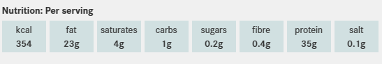

Fritatta
Ingredients
- 1 tsp oil
- 80g chestnut mushrooms, sliced
- 50g ham, diced
- 80g bag spinach
- 4 medium eggs, beaten
- 1 tbsp grated cheddar
Recipe
- STEP 1
Heat the grill to its highest setting.
Heat the oil in an ovenproof frying pan.
Tip in the mushrooms and fry for 2 mins.
Stir in the ham and spinach,
and cook for 1 min more until the spinach
has wilted. Season well with black pepper
and a pinch of salt. - STEP 2
Reduce the heat and pour over the eggs.
Cook undisturbed until the eggs are mostly set.
Sprinkle over the cheese and put
under the grill for 2 mins.
Serve hot
Mushroom Brunch
Ingredients
- 250g mushrooms
- 1 garlic clove
- 1 tbsp olive oil
- 160g bag kale
- 4 eggs
Recipe
- Slice the mushrooms and crush the garlic clove.
Heat the olive oil in a large non-stick frying pan,
then fry the garlic over a low heat for 1 min.
Add the mushrooms and cook until soft.
Then, add the kale.
Once all the kale is wilted, season. - Now crack in the eggs and keep them cooking gently for 2-3 mins.
Then, cover with the lid until the eggs are cooked.
Serve with regular or keto bread.
Baked Salmon
Ingredients
- 4 skinless salmon fillets
- 1 tbsp olive oil or melted butter
- chopped herbs, lemon slices and
steamed long-stem broccoli, to serve
Recipe
- Heat the oven to 180C/160C fan/gas 4.
Brush each salmon fillet with the oil
or butter and season well. - Put the salmon fillets in an ovenproof dish.
Cover if you prefer your salmon to be tender,
or leave uncovered if you want the flesh to roast slightly. - Roast until just opaque and easily
flaked with a fork. Serve with a sprinkling of
chopped herbs, lemon slices and
steamed long-stem broccoli, if you like.

